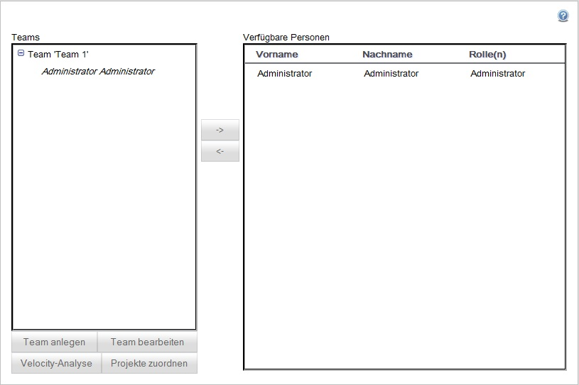

Die Teamverwaltung
Die Oberfläche der Teamverwaltung ist zweigeteilt:

Personen einem Team hinzufügen / Personen aus einem Team entfernen
Zur Bearbeitung der Zusammensetzung eines Teams wählen Sie das betreffende Team zunächst aus der Auflistung im linken Teil der Benutzeroberfläche aus. Dem Team bereits angehörende Personen werden dort untergliedert dargestellt.
Die Liste auf der rechten Seite zeigt alle verfügbaren Personen, die dem Team noch hinzugefügt werden können.
Sie verändern die Zusammensetzung über die Buttons "<-" und "->" nach dem Mengenschema, d.h. um einem Team beispielsweise eine Person hinzuzufügen, wählen Sie das Team links aus, wählen die betreffende Person aus der rechten Liste und klicken den Button mit der Aufschrift "<-" um diese Person also "nach links" in das Team zu ordnen.
Analog dazu funktioniert das Auflösen einer Teamzugehörigkeit: Sie wählen ein Team aus der linken Liste aus und selektieren aus der untergliederten Personenauflistung des Teams die Person, die Sie aus dem Team entfernen wollen. Mit Klick auf den Button "->" wird die betreffende Person "nach rechts", also aus dem Team in die Liste verfügbarer Personen überführt.
Created with the Personal Edition of HelpNDoc: Easily create iPhone documentation